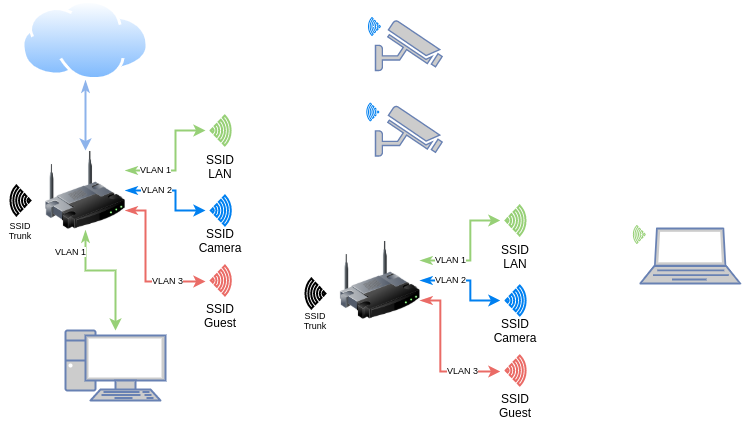

vlans and wifi
Transporting tagged VLAN traffic over a wireless link is a reasonably common setup in commercial environments. It turned out to be unexpectedly challenging with OpenWrt. I figured it out so you don’t have to.
Motivation
I recently encountered an opportunity to implement VLANs in my home network after moving to a new place, where we inherited a video surveillance system.
I wanted the camera network to be separate from my trusted LAN, partly because it’s good security practice, but mostly because I wanted to hone my networking skills.
With a single device broadcasting Wi-Fi, setting up one SSID per VLAN is pretty straightforward on any platform. If you’ve got multiple APs connected via Ethernet, as you might find in an office setting or large home, the setup gets a little trickier. But let’s say you need to set up multiple APs without a way to wire them up with Ethernet - say, in a large home with concrete walls. This is where wireless trunking comes in.

Fig. 1: Network diagram
Layer Cake
One of the key concepts in networking is the OSI layer model. It’s a conceptually unifying way of understanding how computers talk to each other, all the way from the physical wire (or radio) that connects them to the way the bits are organized the moment they leave your web server.
Without going in to too much detail, wired (Ethernet) and wireless (802.11) networks use different link level (layer 2) protocols. VLAN tagging is an Ethernet thing. This means that if you want to transport Ethernet frames over a different layer 2 protocol like 802.11 Wi-Fi, you need to encapsulate those frames into a different protocol higher up on the networking stack, send the encapsulated data over your not-Ethernet link, and unpack the data back to Ethernet frames on the other side. This problem is solved by the Generic Routing Encapsulation (GRE) protocol.
GRE does this by stuffing layer 2 Ethernet frames into layer 3 IP packets (either IPv4 or IPv6), allowing us to pretend like there’s an Ethernet trunk between our routers, when really there’s just some charged particles wafting through the air.
There’s a lot that one must consider to make this sort of thing work. Issues like packet fragmentation can make it seem like your link is working when it’s really not. This is where a solid understanding of the OSI model (and getting comfortable with tcpdump) really helps.
The Alternative
If all we’re doing is moving IP packets around, you ask, why not simply route them? Isn’t that what routers are for? I asked myself this many times throughout the process, and the answer is, well, sure, sort of.
But there are two downsides with this approach: firstly, things like DHCP and mDNS are difficult to route properly, because they rely on broadcast and multicast packets, respectively. One would need to set up some sort of relay or reflector daemon on each router to ensure that broadcast and multicast traffic made it across the link. Secondly, firewall rules can get especially tricky when trying to allow certain services to talk across networks. What if I want a client on the guest Wi-Fi to be able to cast a YouTube video to the Chromecast in the living room, but not the bedroom? What about allowing only a certain client to access the video surveillance network?
In short, I wanted it to “just work” as if I had a designated trunk port on each device with an Ethernet cable between them.
Configuration
I’ll assume the reader has some prior knowledge of working with OpenWrt via the command line. Some of this stuff can’t be configured through the web UI. A good starting point can be found in the OpenWrt docs.
The basic idea is this: set up router A in master (AP) mode, router B as a Wi-Fi client (STA), each with a static private IP somewhere in RFC1918. The wireless interfaces must each be configured with an MTU (maximum transmission unit) large enough to accommodate a full 1500-byte Ethernet frame, plus the GRE protocol headers, plus the encapsulating IP overhead. 802.11 supports an MTU of up to 2304, so I chose a reasonable value of 2048 bytes.
Next, a GRE layer 2 tunnel is defined and bound to the wireless interface. The remote and local addresses must match the addresses chosen above. Optionally, the GRE interface is enslaved to a trunk bridge interface so that we may link in to a real wired backhaul network.
In declarative UCI, all of that comes together (for router A) like this:
#/etc/config/wireless
config wifi-iface 'trunk'
option device 'radio0'
option mode 'ap'
option ifname 'wtun'
option network 'wtun'
option ssid 'trunk'
option encryption 'psk2'
option key 'supersecretpassword'
option hidden '1' # avoids beacon pollution
option disassoc_low_ack '0' # helps stay connected
# /etc/config/network
config interface 'wtun' # must match 'network' above
option proto 'static'
option ipaddr '10.99.0.1'
option netmask '255.255.255.0'
option delegate '0' # don't assign IPv6
option mtu '2048' # should be big enough
config interface 'gre'
option proto 'gretap' # layer 2 encapsulation
option ipaddr '10.99.0.1' # from above
option peeraddr '10.99.0.2' # the other end
option tunlink 'wtun' # from above
option network 'trunk' # enslave to trunk bridge
option mtu '1500' # standard Ethernet MTU
config interface 'trunk'
option type 'bridge'
option proto 'none' # no IP address here; layer 2 only
option auto '1' # allow empty bridge to come up automatically
option bridge_empty '1'
option ifname 'eth0' # for a trunk port (requires at least one tagged port)
option delegate '0' # ignore IPv6
option igmp_snooping '1'
option stp '1' # just in case
config interface 'lan'
option type 'bridge'
option ifname 'eth0.1 @trunk.1' # enslave VLAN 1, both on physical switch and trunk bridge
option proto 'static'
option ipaddr '192.168.1.1'
option netmask '255.255.255.0'
option gateway '192.168.1.1'
option ip6assign '64'
option igmp_snooping '1'
option stp '1'
Note that these are not complete configuration files. There must also be a corresponding wifi-device called radio0 defined in /etc/config/wireless to define some of the radio parameters (channel, HT mode, etc.), the rest of the networks are missing (WAN, guest, camera), but it should be enough to get you started.
I’m using 10.99.0.1/24 for router A and 10.99.0.2/24 for router B in this example as the tunnel endpoint addresses. For router B, the following things need to be changed:
- Use
10.99.0.2as thewtuninterface IP address - Swap the
ipaddrandpeeraddrfields in thegreinterface - Use
stamode for thewifi-ifaceinstead ofap
You can find my full working configuration for both routers on GitHub.
References
- https://en.wikipedia.org/wiki/OSI_model
- https://openwrt.org/docs/guide-user/base-system/user.beginner.cli
- https://openwrt.org/docs/guide-user/network/tunneling_interface_protocols
- https://openwrt.org/docs/guide-user/base-system/basic-networking
- https://openwrt.org/docs/guide-user/network/wifi/basic
- https://forum.openwrt.org/t/howto-l2-trunk-over-wifi-with-gretap/75689
- https://forum.openwrt.org/t/trunking-over-wireless/27517
- https://forum.openwrt.org/t/vlan-trunk-over-wlan/5427
- https://forum.openwrt.org/t/vlan-trunk-over-wireless-link/12228
- https://gist.github.com/stephanschuler/6f1e0ef82e0fe2451b9e817a04fb432e
- https://backreference.org/2013/07/23/gre-bridging-ipsec-and-nfqueue/
- https://www.cisco.com/c/en/us/support/docs/ip/generic-routing-encapsulation-gre/25885-pmtud-ipfrag.html
- https://github.com/oofnikj/openwrt-gretap